Systema Naturæ
Carlos Carvalho Arte Contemporânea, Lisbon, 2012
Systema Naturæ, an installation/drawing project, is a fictional botanical study. In my research, I create and draw botanical species crossed with mechanical and constructed shapes. Like hybrid plants, they allude to the manipulation of the natural world.
The installation includes eight large watercolor drawings that reference educational charts, and small drawings of each of the invented species, displayed in furniture specifically built for them. A sculptural piece, the Portable Museum, is a box/crate on wheels filled with objects and materials related to the whole exhibition. The Portable Museum could hold the entire contents of the exhibition, addressing the ideas of portability and nomadism, critical in my artwork.
The Species Guide, an artist's book, served as a guide to the exhibition. A book, Systema Naturæ, was produced in collaboration with the writer José Roseira.
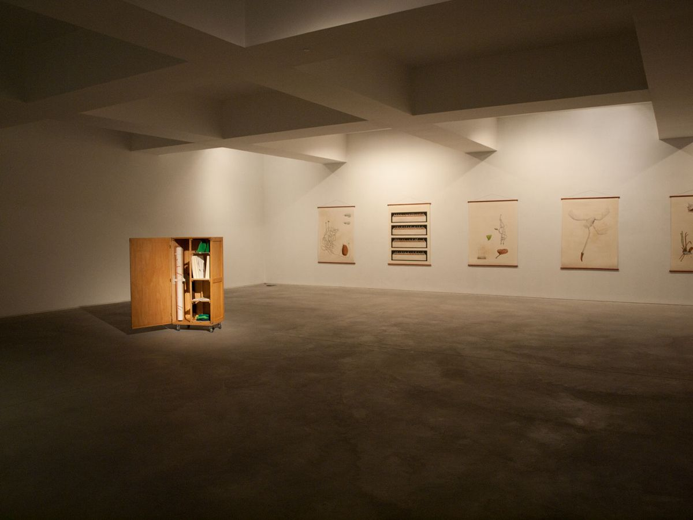
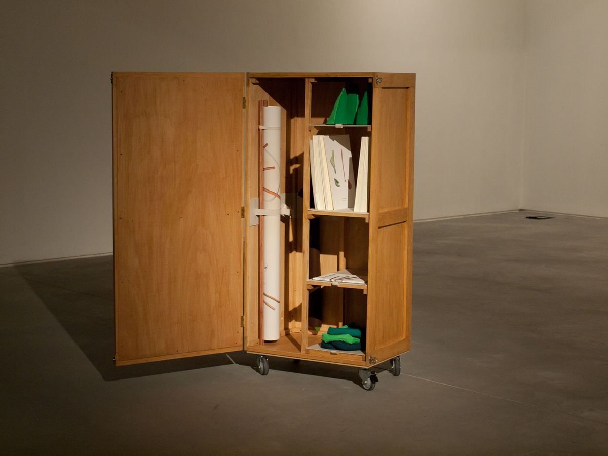
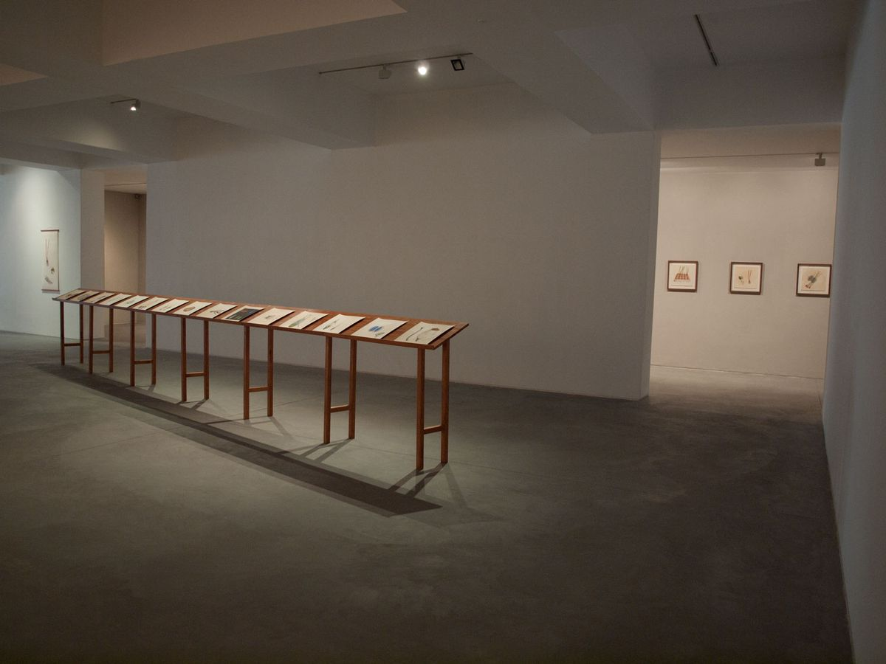
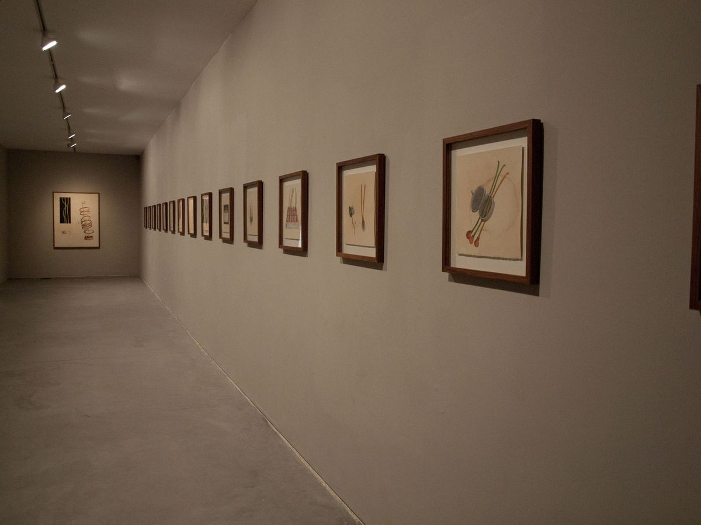
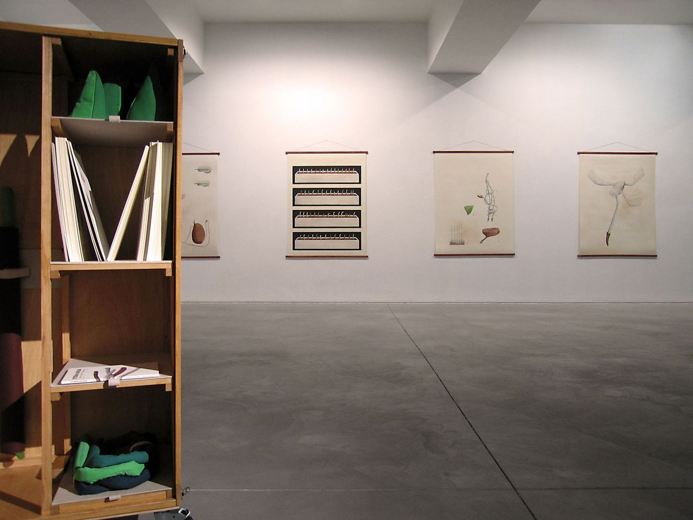
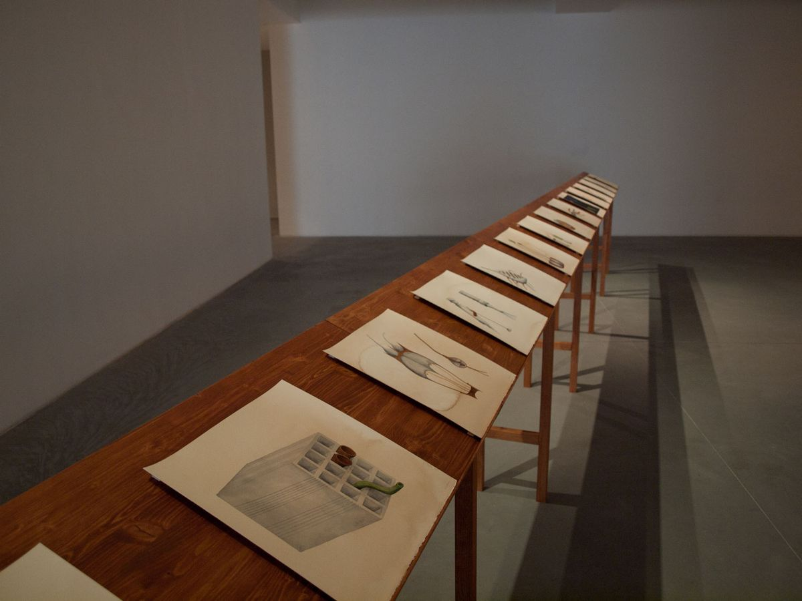
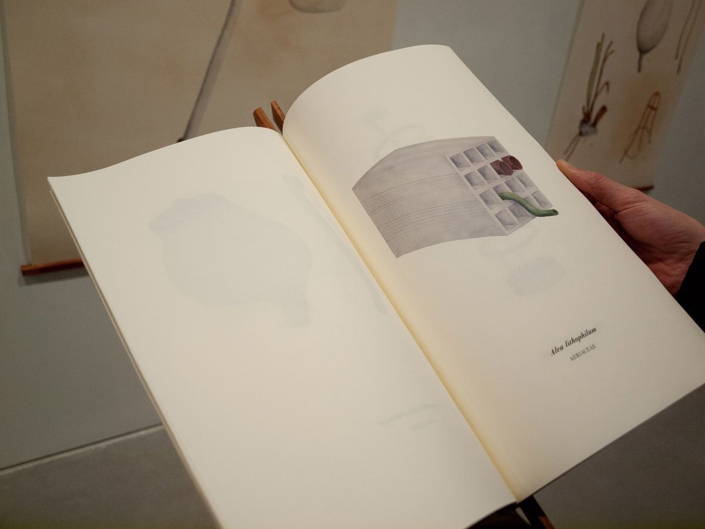
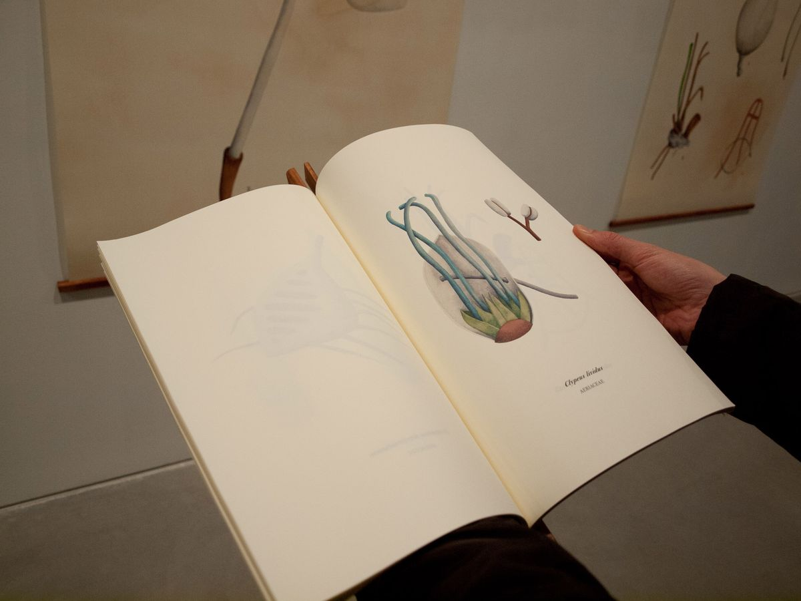
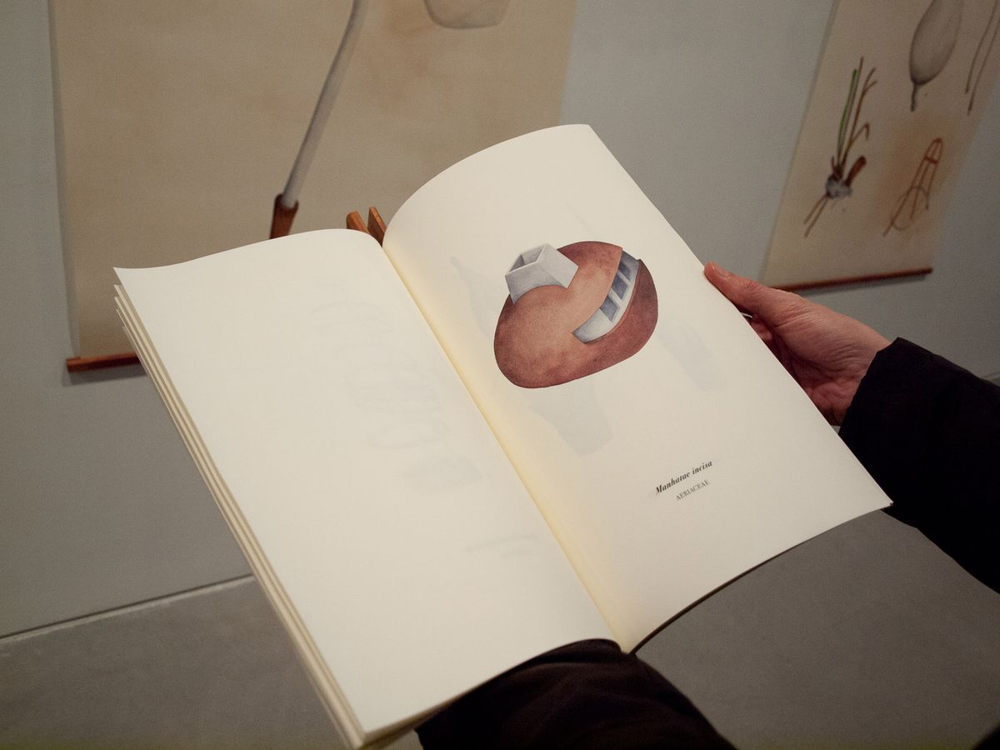
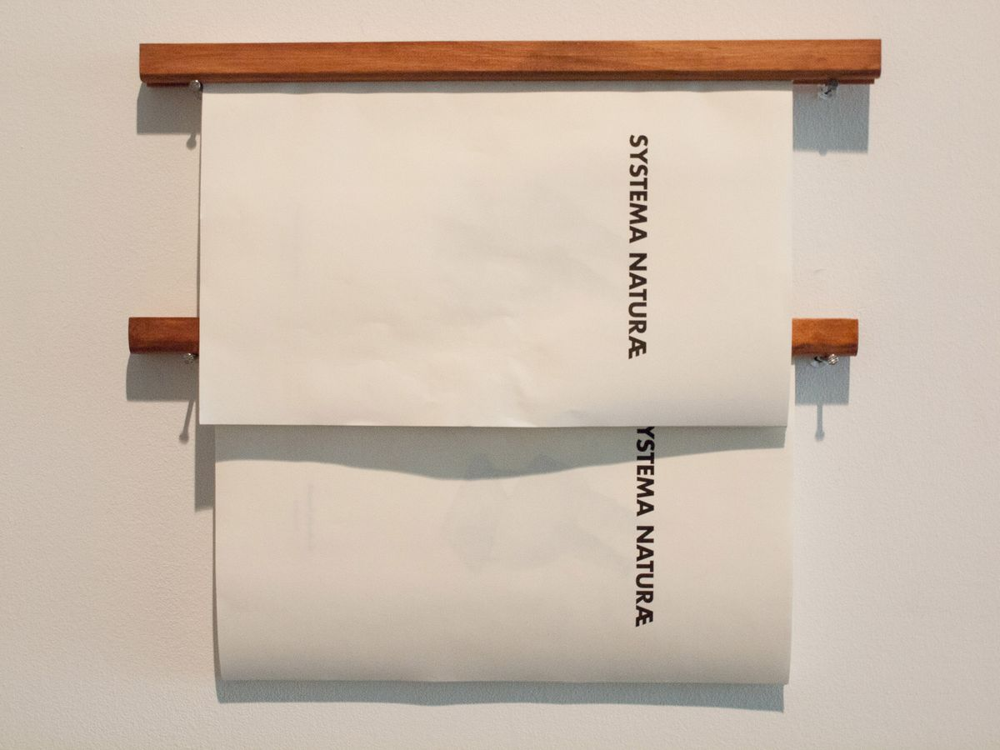
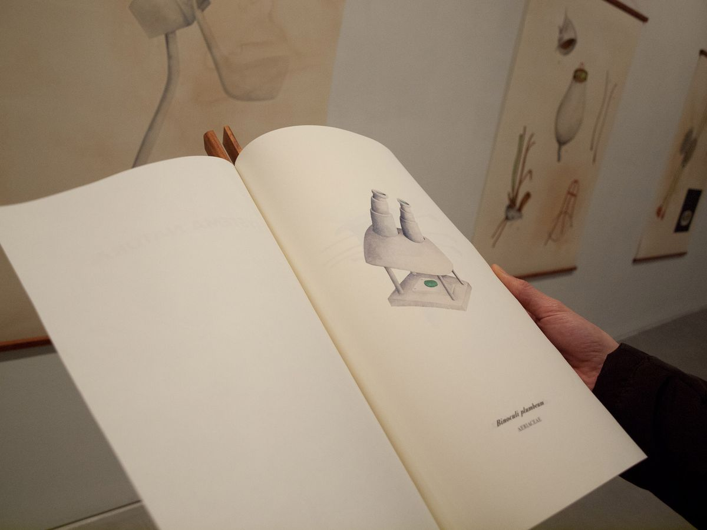
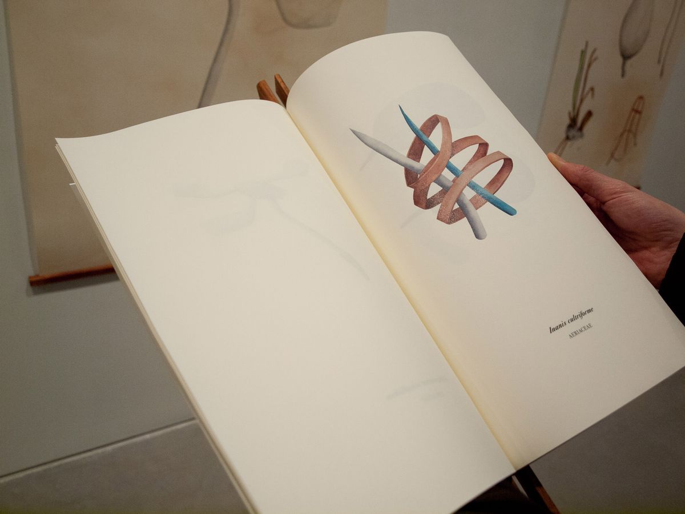
Texts
- Systema NaturæCatarina Leitão